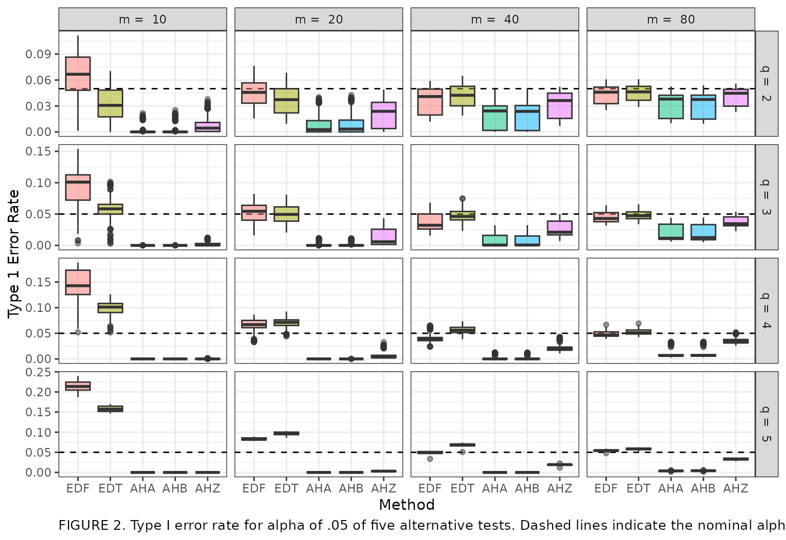

visualization.RmdIn this vignette, we provide a brief example of how to present and report results from a simulation study. We replicate Figure 2 of Tipton & Pustejovsky (2015), which examined several small sample corrections for robust variance estimation methods as used in meta-analysis.
Meta-analysis is a set of statistical tools for synthesizing results from multiple primary studies on a common topic. Three major goals of meta-analysis include summarizing the results across the studies using some form of an effect size measure, characterizing the amount of variation in effects, and explaining variation in effect sizes (Hedges, Tipton, & Johnson, 2010). Primary studies often report multiple estimates of effect sizes resulting from multiple correlated measures of an outcome, repeated measures of outcome data or the comparison of multiple treatment groups to the same control group (Hedges et al., 2010). These scenarios result in statistical dependence between effect sizes from the same study. However, typical methods to conduct meta-analysis, such as averaging effect sizes or analyzing moderating effects with meta-regression, involve an assumption that each effect size is independent. Use of such methods that ignore dependence can result in inaccurate standard errors and therefore, hypothesis tests with incorrect Type 1 error rates and confidence intervals with incorrect coverage levels (Becker, 2000).
One alternative, using a multivariate model, explicitly models correlations among effect size estimates (Hedges et al., 2010; Tipton, 2015). However, multivariate meta-analysis requires knowledge of correlations or covariances between pairs of effect sizes within each primary study which are often difficult to obtain (Olkin & Gleser, 2009). Hedges et al. (2010) proposed the use of robust variance estimation (RVE) to handle dependent effect sizes. RVE does not require knowledge of the covariance structure between effect sizes like multivariate analyses. Instead, RVE estimates the variances for the meta-regression model’s coefficients using sandwich estimators (Hedges et al., 2010; Tipton, 2015). RVE is increasingly being used in applied meta-analyses (Tipton, 2015). However, the performance characteristics of RVE are asymptotic in that it requires a large number of clusters (studies) to provide accurate standard errors (Cameron, Gelbach, & Miller, 2008; Tipton, 2015). If the number of studies in a meta-analysis is small, basic RVE can result in downwardly biased standard errors and inflation of Type 1 error rates (Cameron et al., 2008; Hedges et al., 2010; Tipton, 2015). Tipton (2015) and Tipton & Pustejovsky (2015) introduced small sample corrections for RVE for tests of single coefficients and for multiple contrast hypotheses, respectively. Tipton & Pustejovsky (2015) studied five methods, two based on eigen decomposition and three based on Hotelling’s \(T^2\) distribution. The authors recommended a method (AHZ) which approximates the test statistic using Hotelling’s \(T^2\) distribution with degrees of freedom proposed by Zhang (2012) and Zhang (2013). This method resulted in Type 1 error rates closest to the nominal rate of .05. However, AHZ was shown to still have below nominal Type 1 error rates for tests of multiple contrast hypotheses.
The simphelpers package includes a dataset, Tipton_Pusto, containing a subset of the simulation results from Tipton & Pustejovsky (2015). Specifically, the dataset contains results to replicate Figure 2 from the article.
The dataset contains:
num_studies: number of studies contained in each meta-analysis used to generate the data.r: the correlation between outcomes that result in dependence.Isq: a measure of heterogeneity of true effects.contrast: type of contrast that was tested.test: small sample method used. EDF and EDT are the two methods using eigen decomposition and AHA, AHB and AHZ are the three methods based on Hotelling’s \(T^2\) distribution.q: the number of parameters in the hypothesis test.rej_rate: Type 1 error rate with the value for nominal \(\alpha\) set to .05.mcse: The Monte Carlo standard error for the Type 1 error rate.Here is a glimpse of the dataset:
glimpse(Tipton_Pusto)
#> Rows: 15,300
#> Columns: 8
#> $ num_studies <dbl> 10, 10, 10, 10, 10, 10, 10, 10, 10, 10, 10, 10, 10, 10, 10…
#> $ r <dbl> 0, 0, 0, 0, 0, 0, 0, 0, 0, 0, 0, 0, 0, 0, 0, 0, 0, 0, 0, 0…
#> $ Isq <dbl> 0, 0, 0, 0, 0, 0, 0, 0, 0, 0, 0, 0, 0, 0, 0, 0, 0, 0, 0, 0…
#> $ contrast <chr> "O:2:23", "O:2:23", "O:2:23", "O:2:23", "O:2:23", "O:2:24"…
#> $ test <fct> AHA, AHB, AHZ, EDF, EDT, AHA, AHB, AHZ, EDF, EDT, AHA, AHB…
#> $ q <chr> "2", "2", "2", "2", "2", "2", "2", "2", "2", "2", "2", "2"…
#> $ rej_rate <dbl> 0.0000, 0.0000, 0.0036, 0.0750, 0.0323, 0.0000, 0.0000, 0.…
#> $ mcse <dbl> 0.0000000000, 0.0000000000, 0.0005989190, 0.0026339134, 0.…Below we clean the dataset for visualization. We add q = in front of the value for \(q\) and we add m = in front of the value for the number of studies.
Below we graph the Type 1 error rates. The error rate is mapped onto the y axis, the small sample method is mapped onto the x axis, the method is also mapped as color filling so that different methods will have different colors. We add a dashed line on the nominal \(\alpha\) level of .05. We create boxplots to capture the range of Type 1 error rates for each method across the conditions examined in the simulation. We facet by number of studies, m, and number of parameters used in the hypothesis test, q.
Tipton_Pusto %>%
ggplot(aes(x = test, y = rej_rate, fill = test)) +
geom_hline(yintercept = .05, linetype = "dashed") +
geom_boxplot(alpha = .5) +
facet_grid(q_graph ~ m, scales = "free") +
labs(x = "Method", y = "Type 1 Error Rate", caption = "FIGURE 2. Type I error rate for alpha of .05 of five alternative tests. Dashed lines indicate the nominal alpha level.") +
theme_bw() +
theme(legend.position = "none",
plot.caption=element_text(hjust = 0, size = 10))
Here is the write-up of the results from Tipton & Pustejovsky (2015):
Figure 2 reveals several trends. First, Type I error for the EDF and EDT tests typically approach the nominal values from above, whereas the AHA, AHB, and AHZ tests approach the nominal values from below. This trend holds in relation to both \(m\) and \(q\). For example, when there are 20 studies, as \(q\) increases, the Type I error rates of the EDF and EDT tests increase to values far above nominal (close to .10), while the error rates decrease toward 0 for the AHA, AHB, and AHZ tests. For each value of \(q\), the error rates of all five tests converge toward the nominal values as the number of studies increases.
Second, the EDF and EDT tests have Type I error rates that cover a wide range of values across the parameters and hypothesis specifications under study (as indicated by the long whiskers on each box). Because it is not possible to know a priori in which design condition a particular analysis will fall, it makes more sense to compare the maximum Type I error observed across tests. While the EDT and EDF tests have Type I error rates that are closest to nominal on average, they also exhibit error rates that are far above nominal under a large number of design conditions that cannot be identified a priori. In comparison, the AHA, AHB, and AHZ tests are typically more conservative and are also nearly always level-\(\alpha\), with a maximum error rate of 0.059 across all conditions studied. In describing further trends, we therefore focus only on the three AH tests.
Below we calculate the maximum Monte Carlo standard error (MCSE) for each of the methods presented in the graph above. Ideally, MCSE values should be relatively small compared to the estimated Type 1 error rates. Overall, the maximum MCSEs are small compared to the range of reported rejection rates.
| test | mcse |
|---|---|
| EDF | 0.0043 |
| EDT | 0.0038 |
| AHA | 0.0022 |
| AHB | 0.0023 |
| AHZ | 0.0023 |
Becker, B. J. (2000). Multivariate meta-analysis. In Handbook of applied multivariate statistics and mathematical modeling (pp. 499–525). Elsevier.
Cameron, A. C., Gelbach, J. B., & Miller, D. L. (2008). Bootstrap-Based Improvements for Inference with Clustered Errors. The Review of Economics and Statistics, 47.
Hedges, L. V., Tipton, E., & Johnson, M. C. (2010). Robust variance estimation in meta-regression with dependent effect size estimates. Research Synthesis Methods, 1(1), 39–65. https://doi.org/10.1002/jrsm.5
Olkin, I., & Gleser, L. (2009). Stochastically dependent effect sizes. The Handbook of Research Synthesis and Meta-Analysis, 357–376.
Tipton, E. (2015). Small sample adjustments for robust variance estimation with meta-regression. Psychological Methods, 20(3), 375–393. https://doi.org/10.1037/met0000011
Tipton, E., & Pustejovsky, J. E. (2015). Small-Sample Adjustments for Tests of Moderators and Model Fit Using Robust Variance Estimation in Meta-Regression. Journal of Educational and Behavioral Statistics, 40(6), 604–634. https://doi.org/10.3102/1076998615606099
Zhang, J.-T. (2012). An approximate hotelling t2-test for heteroscedastic one-way manova. Open Journal of Statistics, 2(1), 1–11.
Zhang, J.-T. (2013). Tests of linear hypotheses in the anova under heteroscedasticity. International Journal of Advanced Statistics and Probability, 1(2), 9–24.